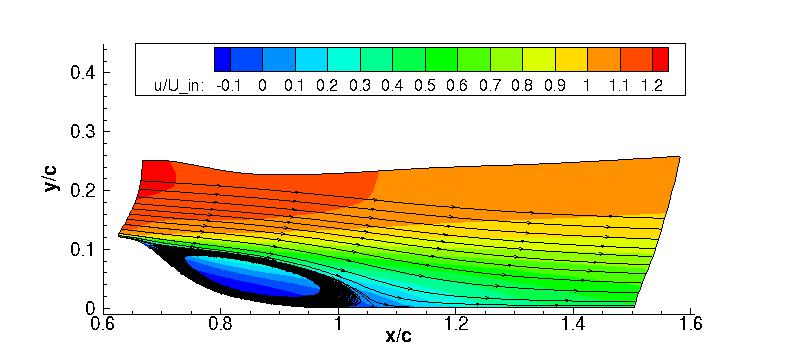

Public Access (formerly Langley Research Center)Turbulence Modeling Resource |
LES: 2-D NASA Wall-Mounted Hump 2009
Return to: Data from LES - Intro Page
Return to: Turbulence Modeling Resource Home PageThe data on this page were provided by S. Lardeau of CD-ADAPCO.
This LES case is for 2-D separating flow over the NASA Wall-Mounted Hump (no flow control).
The link to the experimental data can be found by clicking here:
NASA CFDVAL2004 Workshop page (independent website, will open new window).
The LES was run using an incompressible code, and has been documented in the following publication:
Only limited LES data are provided (not all LES data
from the 2009 publication are available).

Some relevant information is given here, but the
interested reader is referred to the above publications for complete details:
Long-time averaged LES data are provided below (on a grid
normalized by the hump chord).
These results are from a grid with approximately 9.4 million grid cells, covering a spanwise extent of 0.4 c with 128 cells in the
spanwise direction. The 768 x 96 x 128 grid extended from -0.81 < x/c < 2, and the upper wall at y/c=0.909 included
a constriction to mimic the blockage effect of the end plates in the experimental configuration.
A precursor simulation with rescaling was performed in a region upstream and overlapping the hump grid,
in order to establish the inflow conditions.
Additional details about the LES grid and methodology can be found in the above
reference. Details regarding the NASA wall-mounted hump geometry can be found at:
Separated
Flow over Wall-mounted Hump with and without Flow Control.
The full grid used in the LES simulation is not available here. The field data below contains LES time-averaged results only on
a limited region from the full grid (extracted in the area of interest shown in the figure above using every other point in each coordinate direction
from the original LES grid).
Velocity and turbulence mean field data:
Extracted velocity and turbulence profiles at
x/c=0.65, 0.66, 0.7, 0.8, 0.9, 1.0, 1.1, 1.2, and 1.3:
Surface pressure coefficients:
Return to: Data from LES - Intro Page
Page Curators: Christopher Rumsey,
Ethan Vogel,
Clark Pederson
Last Updated: 11/05/2021